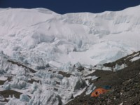
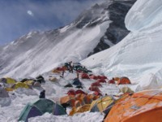
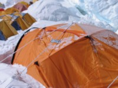

<center><table width=90%><tr><td>


<br><b>29 апреля.</b><br>
<ul>
Сегодня иду на Северное Седло! Трепещите, горы! 
<br><br><a href="North_col1.jpg"></a><br><small>Здесь вам не равнина!</small>
<br><br>
Подьем под стену занимает около двух часов. На леднике одеваю снарягу - я готов к бою.
Первые три веревки прохожу сравнительно легко, хотя чудовищная крутизна подьема меня несколько озадачивает. 
Явно не хватает дыхания. Упорно ползу вверх. <br><br>
Впереди новая напасть - широкая трещина, через которую перекинута узкая длинная лесница.
Что я, в кино каскадером снимаюсь?! Перехожу на удивление спокойно, посередине останавливаюсь и заитересованно смотрю вниз. 
Ничего интересного :)
<br><br>
Следующая веревка висит на совершенно отвесной ледяной стене. Вот это явно лишнее. Я ведь и так еле ползу. 
Подтягиваю себя на жумаре обеими руками, пока кошки сами ищут неровности во льду. Черт, как же тяжело.
<br><br>
Окончательно выбившись из сил, в очередной раз повисаю на веревке и пытаюсь восстановить дыхание. 
По параллельной веревке вниз буквально падает шерпа, делая гигантские шаги по отвесной стене. 
Увидев меня, он зависает на моем уровне. На смуглом лице широкая - от уха до уха - улыбка. 
Показывая пальцем вниз, он с важным видом изрекает - "It is much easier this way". 
Вот сука. На моем лицо, должно быть, смесь крайней усталости и ненависти. 
Делаю над собой усилие, изображаю широкую неискреннюю улыбку, говорю - "Lucky you", и несколькими мощными рывками
поднимаю себя по стене на пару метров вверх. Оставьте меня одного, дайте мне спокойно умереть.
<br><br>
Как ни странно, ближе к седлу мне становится полегче. Ползу по стене вверх медленно, но уверенно.
Еще одна трещина, еще одна веревка, и я вижу две наши палатки. Где мне упасть? 
Из одной палатки показывается голова Игоря, она предлагает мне горячий бульон. Стало быть, вопрос решен:)
Еще через полчаса к нам присоединяется Иван. Палатка маленькая, но зато втроем будет теплее. А может и веселее.
<br><br>
Я отвечаю за приготовление еды.
Еда - это в основном вода. То есть чай и бульон. Непрерывно топлю снег.<br><br>
Вечером происходит аврал - нет Юры. 
Мысль о том что мы сейчас, в темноте, будем ползать по отвесным ледяным стенам и заглядывать в трещины, приводит меня в ужас.
Тем не менее, покоряясь злой судьбе, одеваю обвязку, кошки, выползаю из палатки. О счастье, Юра уже нашелся... 
<br><br>
Забиваюсь в спальник в пуховых штанах и куртке. Так и быть, кошки снимаю.
Нет места выпрямить ноги, острый камень впивается в бок.
Спокойной ночи, Дима...
</ul>

<br><b>30 апреля.</b><br>
<ul>
Удивительно, но чувствую себя очень хорошо, частями даже бодро. Топлю снег, делаю чай и кашу. Все вместе одеваемся и медленно шагаем наверх.
Проходим основное скопление палаток. Теперь можно хорошенько рассмотреть лагерь, и уходящий вверх гребень.
<br><br><a href="North_col_camp.jpg"></a><br><br>

Наша цель - лагерь номер 2 (7700). Он находится выше по гребню. Граница снега и камней - примерно 7500.
По гребню провешены перила - это приятно. Пройдя несколько веревок, мы все вынуждены повернуть назад - сильный ветер со снегом, высока опастность обморожения.
Тем более что у меня, идущего в обычных Koflaсh, пальцы ног уже практически потеряли чувствительность. Холод и гипоксия - лучшие друзья, кровь не доходит до конечностей, т.к. главное - это питание головного мозга.
<br><br>
Лежу в палатке не снимая обвязки. Опять топлю снег - этот поцесс бесконечен, потребность в воде сейчас очень высока.
Пьем какие-то бульоны с крекерами. Через пару часов с Иваном делаем еще одну попытку подобраться поближе к лагерю 2. Опять ветер выметает нас назад, но на этот раз удается зайти чуть дальше.
<br><br>
Опять неизбежная топка снега. Жизнь в палатке не отличается разнообразием. 
Топим снег, пьем чай, немного спим, топим снег, пьем бульон, немного спим и т.д. Очень тесно и холодно. Хочется домой, к маме. 
</ul>

<br><b>1 Мая.</b><br>
<ul>
Тяжелое пробуждение. Палатка частично засыпана ночным снегом снаружи, и полностью покрыта толстым слоем льда и инея изнутри.
<br><br><a href="tent.jpg"></a><br><br>

Мне кажется, даже на мою щетину намерз слой льда. Надо бы побриться :)<br><br>
Сегодня идем вниз, больше тут ловить нечего. Эта мысль доставляет явное облегчение. Целую вечность одеваю обвязку, еще одна вечность уходит на ботинки и кошки.
Пусть вниз конечно не сравнить с подьемом на седло, однако все тело словно налито свинцом. 
Пошатываясь перехожу через трещину, безразлично смотрю как лесница прогибается, а кошки проскальзывают на перекладинах.
Надо бы переползти лежа, как минуту назад сделал Игорь, но лень делать лишние движения.<br><br>
Дальше спуск становится круче, переходя в практически отвесный. Задумчиво осматриваю висящую на обвязке "восьмерку". 
Кажется, последний раз я пользовался этим приспособлением еще в школе. Если вообще пользовался. 
Вроде идея понятна, и через минуту скольжу вниз по веревке. Хорошо! <br><br>
Уже машинально перещелкиваюсь на следующие веревки, дело движется быстро. 
Сбегая спиной вперед по отвесной стенке, не замечаю присыпанную снегом дыру в леднике, и проваливаюсь туда по пояс. Ой. 
Быстрее отсюда. Через некоторое время понимаю, что склон выполаживается и "восьмерка" не нужна. 
Вообще прекрасно. Еще минут 10 - стена заканчивается, дальше ровный ледник. Жду Игоря, снимаем обвязки, вместе бредем в ABC.
<br><br>
Сегодня праздник. Пью виски, без особого, впрочем, энтузиазма. 
</ul>
<br><b>2 Мая.</b><br>
<ul>
Оказывается, сегодня ровно месяц, как я уехал из Москвы.<br><br>

Долгое пребывание на высоте начинает сказываться. 
Никаких конкретных проблем нет, но чувствую нарастающую вялость и апатию.
Неудивительно, я уже 4 ночи на 6400-7100. Акклиматизация понемногу растет, силы понемногу уходят.
<br><br>
Лениво собираюсь, вяло жду Ивана и Юру. Все вместе вяло двигаем вниз :) Традиционно захожу в middle, отдыхаю, хотя и не устал.
Ранним вечером приходим на базу, лениво пьем пиво, едим соленого леща, смотрим кино по ноуту. 
<br><br>
По хорошему, надо бы спуститься на километр пониже, даже базовый лагерь слишком высок для нормального отдыха.
Народ обсуждает поездку завтра в Шигар. Мне лень что-то решать, определюсь завтра.
</ul>
</td></tr></table>
